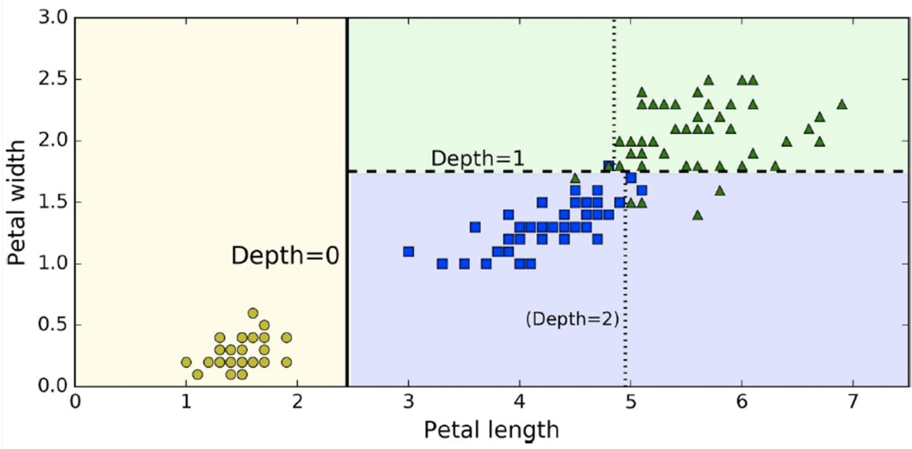
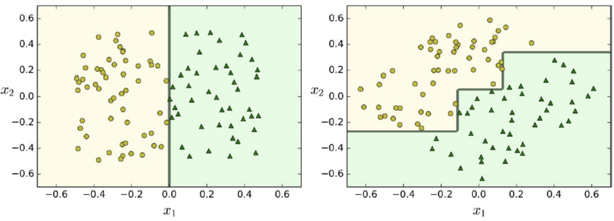
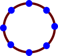

Machine Learning Technologies
Matthew Barnes
About the module 3
Theory 3
Introduction to ML Technologies (Chapter 1) 3
Classification (Chapter 3) 6
Regression (Chapter 4) 10
Linear regression 10
Polynomial regression 11
Regularisation 12
Gradient Descent 14
Softmax regression 15
SVMs (Chapter 5) 16
Decision trees (Chapter 6) 24
Ensemble learning (Chapter 7) 30
Voting 31
Bagging and pasting 31
Random 32
Boosting 33
Stacking 35
Dimensionality reduction (Chapter 8) 36
Curse of dimensionality 36
Projection 36
Manifold learning 38
Principal Component Analysis (PCA) 41
Locally Linear Embedding (LLE) 42
Artificial Neural Nets (Chapter 10) 43
Deep Neural Nets (Chapter 11) 46
Vanishing gradients 46
Exploding gradients 48
Slow training with gradient descent techniques 48
Overfitting issues in large networks 49
Convolutional Neural Nets (Chapter 13) 50
Recurrent Neural Nets (Chapter 14) 54
Implementation 57
SVMs 57
Linear SVM regression 58
Non-linear SVM regression 58
Polynomial features 58
Kernel trick 59
RBF kernel 59
Decision trees 59
Classification 59
Regression 60
Ensemble learning 60
Bagging and pasting 60
Random forest 61
Gradient boosting 62
Dimensionality reduction 62
Principal Component Analysis (PCA) 62
Incremental PCA 63
Kernel PCA 63
Locally Linear Embedding (LLE) 63
Deep Neural Nets 63
Setting up 64
Setting up a layer 64
Setting up a full DNN 64
Setting up the loss function 64
Setting up the training part 64
Evaluating performance of model 65
Initialise model parameters 65
Full training code for DNNs 65
Using DNNs 65
Convolutional Neural Nets 65
Stacking feature maps 65
Pooling layers 67
Recurrent Neural Nets 67
TL;DR 67
Practical Use Cases 68
Introduction to practical use cases 68
Coursework intro 69
Task and Data 69
Design and Implementation 70
Evaluation 70
FAQ 70
Marking Scheme 70
About the module
-
50% coursework, 50% exam
-
Exam: only covers theory part, the book, Long’s
part
-
Coursework: mini project with case study based on real data. You
submit a report
Theory
Introduction to ML Technologies (Chapter 1)
-
Machine Learning is the science (and art) of programming computers so they
can learn from data.
|

|

|
|
Classical software implementation process:
system designer generates rules
|
Machine learning process: learn from data
|
|

|

|
|
ML with adaptive (changing) environment
|
ML generates new insights
|
-
When there is no solution using the traditional
approach...
-
... you can use machine learning.
-
ML can also adapt to new data.
-
You can also get insight about complex problems and large
amounts of data (data mining, data science).
-
Supervised vs unsupervised vs reinforcement
-
Offline / batch vs online
-
Instance-based (lazy) vs model-based (eager)
-
Input → Output
-
Given this → output this
-
That’s the training data; it’s just a set of
correct input-output pairs
- Just input
-
Try to predict the output
-
Good for when there’s no absolute
“correct” answer
-
Semi-supervised learning:
-
All inputs are available at the beginning
-
The machine just crunches the entire data set at one
time
-
The machine outputs in bulk
-
Data comes into the system through a stream
-
The machine outputs as a stream
-
Good for input that depends on earlier output
-
Instance-based (lazy) learning:
-
There is no model (it is stateless)
-
Data points are compared with earlier data points or
neighbouring ones
-
Inputs are computed on the fly
-
No global parameters are set
-
Model-based (eager) learning:
-
A model is set
-
The machine remembers everything
-
Data points are compared with the stored model
-
Has a predetermined number of parameters set
-
Degree of freedom is limited, which reduces overfitting
(but increases underfitting)
-
E.g. linear models
-
Number of parameters is not determined prior to
training
-
More freedom than parametric models, so overfitting is more
likely
-
Should use regularisation to limit the model’s power
and reduce overfitting
-
E.g. decision trees
-
Not enough data
-
Non-representative data (e.g. bias)
-
Poor quality data
-
Feature selection (too many features)
-
Overfitting (too specific; not general enough)
-
Underfitting (too general, not specific enough)
-
High accuracy on training data, low quality on
prediction
-
This happens because of “noise” in the data
points (the data isn’t perfect)
-
Your machine captures the noise of the data and not the
underlying input-output relationship
-
Main problems of machine learning:
-
Insufficient quantity of training data
-
Nonrepresentative training data
-
Poor-quality data
-
Irrelevant features
-
Overfitting the training data
-
Underfitting the training data
-
When you have two models, pick the simpler one. This is
Occam’s razor.
-
So how do we test ML algorithms?
-
Half the data; use half for training and the other half for
testing.
-
Why not swap the training and testing halves? We’ll
reduce average generalisation errors.
-
This leads into the K-fold cross validation:
-
We partition the data into K pieces.
-
Train with K - 1 partitions, and test with the last
one.
-
Repeat this K times, using a different, unique testing
partition for every iteration.
-
You usually use around 5 or 10 for K.
Classification (Chapter 3)
-
Classification: take raw data, understand what the raw data is about and
put it into one of a finite number of categories
-
Is it a shape? A chair? A table?
-
It’s the most fundamental step.
-
A more serious example is a bank deciding if your card
usage was fraudulent or not.
-
Two kinds of classification:
-
Top down: Inspiration from higher abstraction levels
-
Bottom up: Inspiration from biology, e.g. neural networks
-
Classification algorithms:
-
Support Vector Machines (SVMs)
-
Decision trees
-
Deep neural nets
-
Only two options (yes/no, 1/0, red/blue, hamon/stands
etc.)
- Examples:
-
Spam filters
-
Fraud detection
-
Object detection
-
How good is our algorithm?
-
Factors (used in regression models):
-
Root Mean Square Error (RMSE) - If you plot the RMSE you can differentiate it everywhere
-
Mean Absolute Error (MAE) - You cannot differentiate the MAE at the turning
point
-
Because RMSE squares the errors it penalises larger errors
more than MAE, which is useful when large errors are
particularly undesirable
-
The smaller the error the more accurate
-
Why accuracy as a performance metric sucks
-
Example: asthma attack prediction from cough sound
-
99%: no attack
- 1%: attack
-
We use a ML algorithm to do prediction and it’s 99%
accurate.
-
Is that good?
-
We have a dumb algorithm that always says no.
-
What’s the accuracy of that?
-
It’s 99% again, because 99% of the time it’ll
be correct.
-
So our stupid algorithm is just as good as our fancy ML
algorithm. Not good!
-
True positive (TP): “yes”, correctly predicted
as “yes”
-
True negative (TN) “no”, correctly predicted as
“no”
-
False positive (FP) “no” incorrectly predicted
as “yes” (Type I error)
-
False negative (FN) “yes” incorrectly predicted
as “no” (Type II error)
- Example:
Ratio of correct ones among “yes” predictions
“Did we only predict the ‘yes’ that we should
have predicted?”
Ratio of “yes” that were successfully
predicted
“Did we predict all the ‘yes’ that we should
have predicted?”
-
Now let’s use this on our stupid algorithm:
-
Precision = 0 / (0 + 0) = NaN
-
Recall: 0 / (0 + 0.1) = 0
-
Basically, this algorithm sucks (but now we can prove it
with numbers).
-
“But these are two numbers! I’m lazy and only
want one number”
-
Then we can use F-score (F1). It’s the harmonic mean
of the two.
-
However, F1 is only high if both precision and recall are
high.
-
It’s not good if you have high precision + low recall
or vice versa.
-
It’s also not good if we only want high precision or
only want high recall.
-
So how do we set the parameters for precision / recall
trade-off?
-
We can use a threshold used in SGDClassifier (stochastic
gradient descent) from scikit-learn where lower means we
want high recall, and higher means we want high
precision.
-
ROC (receiver operating characteristic) curve:
-
Like a precision / recall curve, but instead we plot true
positive rate (TPR, or recall) against false positive rate
(FPR)
-
What’s FPR? It’s the ratio of negative
instances incorrectly classified as positive. It’s 1 -
true negative rate (TNR), which is the ratio of negative
instances correctly classified as negative.
-
TNR is also called specificity.
-
So basically ROC curve is recall against 1 -
specificity.
-
So what do we do with this curve?
-
Find the area under the curve (AUC).
-
If the AUC is 1, our classifier is perfect.
-
A purely random one will have an AUC of 0.5.
-
Now we have another metric to measure performance.
-
Multiclass classification:
-
We have more than two classes
-
Some classifiers can handle this normally (e.g. random
forest, naive Bayes)
-
Others need modifications, like SVMs
-
One-versus-all (OvA):
-
We use one classifier for each class
-
Each classifier predicts with a confidence score (e.g. 0 -
100%) to which degree the input matches the class
-
We run each input through all classifiers and each
classifier predicts some confidence score
-
The final outcome for a given input is the class for which
the highest confidence score was predicted
-
Example: Given pictures of fruit, is it an apple, a banana
or a kiwi?
-
We have 3 classifiers, which output a confidence score (0 -
100%) for their class
-
Classifier 1: Is this an apple (or something else)?
-
Classifier 2: Is this a banana (or something else)?
-
Classifier 3: Is this a kiwi (or something else)?
-
E.g. for one input we get outputs 60%, 55%, 65%, therefore
the final decision is kiwi
-
We use one binary classifier for every pair of
categories
-
“Binary” means that each classifier predicts
either one or the other class (e.g. “A” or
“B”) instead of outputting a confidence
score
-
For n classes we need a total of classifiers
-
In most cases (where n > 3) we need more computations,
but easier to scale with large training data sets as we
train each classifier only on a subset that contains those
classes
-
We run each input through all classifiers and select the
class that was predicted most frequently as the final
answer
-
Reusing the fruit example from above, we need the following
classifiers:
-
Classifier 1: Is this an apple or a banana?
-
Classifier 2: Is this an apple or a kiwi?
-
Classifier 3: Is this a banana or a kiwi?
-
E.g. for one input we get outputs “apple”,
“apple” and “kiwi”, therefore the
final decision is “apple”
-
Multilabel classification:
-
We can also assign multiple categories / labels to
data.
-
Not all classifiers can support multilabel
classification
-
Multi-output classification:
Regression (Chapter 4)
-
Classification was discrete label values:
- Is it a cat?
-
Is the person wearing a hat?
-
What if the output is continuous / unbounded?
-
Tomorrow’s highest temperature
-
Students’ final marks
-
We use regression models!
Linear regression
-
Linear correlation between two features X and Y (with some
noise) can be modelled with a straight line
-
We can have more than two features
-
In general, linear regression follows this formula:
-
You can also represent this with vectors:
-
How can we compute the error of our regression model?
-
We can use MSE (mean squared error):
-
So how do we pick the best theta values that minimises the
error function the most?
-
We use the normal equation!
-
But in the real world, x is very large, so using this is
infeasible.
Polynomial regression
-
Sometimes, we cannot model a correlation (e.g. between x
and y) using a straight line
-
You can model it with a curve
-
But polynomials can have any power.
-
What power do we use? 300? 2? 1?
-
It seems 300 is too big and 1 is too small.
-
Too big = overfitting
-
Too small = underfitting
Regularisation
-
How do we know our model suffers from underfitting?
-
Well, here’s one:
-
When the size increases, it converges to a large value (in
this case, around 1.75).
-
When that happens, the model is underfitting.
-
If it’s underfitting, it’s not complex
enough.
-
How do we fix that? We make it more complex!
-
What about overfitting? How do we know if our model is
doing that?
-
Here’s one:
-
Look how far apart the blue and red lines are when the
training set size increases.
-
There is a big gap in loss between the training and
validation data sets!
-
When that happens, the model is overfitting.
-
How do we fix that? We make the model less complex!
-
How do we control overfitting / underfitting?
-
We use regularisation, which is basically limiting the freedom of the model to
avoid overfitting / underfitting.
-
The principle comes from Occam’s razor (basically,
pick the simplest one)
-
We capture model complexity in the cost function (cost
function = loss + model complexity)
-
In other words, we are adding a penalty to the cost
function.
-
There are different types of “penalties” to
use:
-
Ridge regression (Tikhonov regularisation): MSE of linear
regression + regularisation term
-
Ridge tries to keep the weights as small as possible.
-
α (alpha) is a hyperparameter for Ridge. If
it’s 0, Ridge is the same as linear regression. If
it’s 1, all the weights will be very close to 0 and
the result is a flat line through the data’s
mean.
-
If we’re underfitting (we have high bias), reduce
alpha.
-
Lasso (Least Absolute Shrinkage and Selection Operator
Regression)
-
We use Lasso when we are sure the correct model is sparse
(most of the weights are 0 except the few features that
actually matter)
-
Behaves less erratic than Lasso.
-
If you want Lasso without erratic behaviour, set l1_ratio close to 1.
Gradient Descent
-
We can use this to find the theta value that gives the
minimum error:

-
Ok, what’s going on here? There’s some blue
dots and a yellow dot and a curve and aaaaah
-
Basically we’re using (batch) gradient descent to find the minimum theta value for our model
-
We pick a random point on the curve
-
We get the gradient on that point
-
We travel down the gradient using one of these
regularisation equations
-
Find the new point on the curve and repeat until
we’re at the bottom
-
The problem with GD is that it uses every single data point
for each step we take, which can get computationally
expensive.
-
However, it scales well with features: if we have loads and
loads of features, GD will perform way better than the
Normal Equation.
-
Gradient descent cannot get stuck at a local minimum
because the MSE cost function for Linear Regression is
convex, i.e. there only exists one global minimum.
A convex function, as opposed to a concave function.
As you can see, if our graph looks like the one on the left,
there’ll only be one global minimum.
-
Again, we don’t live in a perfect world; this would
take too long in a real use-case!
-
What do we do? Do we just give up? Is life really worthless
after all?
-
No! We use stochastic gradient descent (SGD)
-
What’s that?
-
Basically, when we compute the gradients we don’t use
all the data points, we only use one data point for each
feature.
-
This drastically reduces the amount of computation if we
have loads of training data, making it the fastest gradient
descent algorithm (it will reach the optimum faster than GD and mini-batch
GD)
-
The result is similar to simulated annealing (remember
that?)
-
Because of how erratic SGD is, the error is going to bounce
up and down, but on average it’ll eventually converge
to the optimum.
-
However, it won’t actually reach the optimum;
it’ll just bounce around it...
-
... unless you slowly reduce the learning rate as we
approach the optimum (again, like simulated annealing)
-
There’s also mini-batch gradient descent, which is like SGD but instead of using one data point for
each feature, we use a subset of data points.
-
It’s less erratic than SGD but you get the best of
both worlds.
-
We can also use regression as a classifier using a logistic
function
-
We’re basically converting continuous to discrete
categories.
Softmax regression
-
Softmax is simply a way of doing multiclass classification
with a regression algorithm.
-
It works like this:
-
For every instance x, compute a softmax score sk(x) for each category k
-
Estimate the probability of x being each class k using the softmax function to the scores
-
Pick the class with the highest probability for x
-
You can use softmax for stuff like estimating colours, for
example:
-
if you have a red flower you might get a result like 90%
red, 5% blue, 5% green
-
if you have a turquoise gemstone you might get a result
like 56% green, 39% blue, 5% red
SVMs (Chapter 5)
-
Let’s say you’re training a ML algorithm that
classifies iris plants into the setosa and versicolor
species.
-
We use two features, “petal length” and
“petal width”.
-
When we plot our training dataset as yellow and blue dots
we can see that we can separate the two species in different
ways, e.g. with the red line or with the purple line
below.
-
Yeah, those red and purple lines seem to work.
-
However, they are very close to the data points and thus
it’s unlikely that they work well with testing data
because only a slightly different position of the data
points will result in lots of wrong classifications.
-
How about using this black line model below instead?
-
We made our model more general to make it more effective
across different inputs, which is called “generalisation”.
-
That’s the intuition behind SVMs: our model needs to
be distanced from the data points.
-
Take a look at the black line model. It’s not close
to any of the data points, and the dotted lines show the
boundaries the model should lie in (called the
margin).
-
These dotted lines define the “widest possible street
between the classes”, called the wide margin.
-
By supporting our margin using data lying on the edge, we
are using support vectors, which are instances located on the street, including the
border.
-
Support Vector Machines (SVM) are models that use this technique.
-
So, basically, support vector classifiers / machines are
classifications with wide margins and is fully determined by
support vectors (data on the edge of the margin).
-
How wide should the margin be, and what happens with the
data within the margin?
-
Initial step: feature scaling
-
SVMs will try to fit the largest possible separating margin
between the classes.
-
If the data is not scaled, the SVM will neglect small
features.
-
There are two types of margins in SVMs: hard margin and
soft margin
-
Hard margin: no data points can be in the margin (no violations)
-
Here is a case where a hard margin is impossible (because
we will always have violations)

-
When we have linearly non-separable data like shown above,
we cannot have a hard margin!
-
If we have linearly separable data a hard margin looks like
this
-
Because of the outlier point, the margin becomes very
narrow
-
Soft margin: data points can be within the margin (we allow
violations)
-
However, we need to try and minimise the number of
violations
-
When using a soft margin, we need a balance of margin width
and violations
-
In scikit-learn, there’s a hyperparameter called
C
-
Small C = wider margin but higher violations
-
Large C = smaller margin but low violations (low
generalisation power)
-
If you’re overfitting, reduce C (make margin
wider)
-
If you’re underfitting, increase C (make margin more
narrow)
-
What if you cannot linearly separate your data, like
this:
-
It looks like we need some kind of curve...
-
We could also add a new “polynomial” feature by
mapping our data points to a new dimension, like this
-
This is called feature space transformation.
-
In this example, we square each of our data points.
-
By turning our data into a curve, now we can just use one
line to model our algorithm!
-
If it helps you to visualise it, you could say we’re
“moving” the curve from our algorithm to the
data itself, so instead of our algorithm being a curve, we
make our data a curve.
-
If that just confuses you more, then pretend I never said
it.
-
This is a non-linear SVM.
-
In scikit-learn, we have a parameter d which is the degree of expansion.
- For example:
-
If we have features a and b, and our degree of expansion d
= 3, then our combinations are:
-
In general, the number of added features is:
where n is the number of features we currently have
-
But squaring the data points is boring. Where’s a
more interesting, colourful, cool-looking example?
-
If you set d too low you’ll be underfitting
-
If you set d too high you’ll be there all day
-
What are we going to do?
-
We use magic!
-
It’s actually the Kernel method. It makes it possible to get the same result as if you
added many polynomial features, even with very high-degree
polynomials, without actually having to add them.
-
Basically, just add kernel=”poly” to the SVC
function in scikit-learn.
-
But for linearly separable data models, just use normal
LinearSVC because it’s easier! Use this for non-linear
data.
-
Here’s the trick in practice:
-
The higher the degree, the more non-linear it is.
-
The parameter “r” means how much the model is
influenced by high-degree polynomials vs low-degree ones (so
it’s kind of like a coefficient)
-
However, d and C are the easier parameters to set.
-
You wanna see more magic?
-
Ever heard of Radial Basis Functions (RBF)?
-
It goes like this:
-
You set some points as landmarks, position some similarity
functions on those landmarks
-
As a similarity function we use the Gaussian radial basis
function which evaluates to a value between 0 and 1
-
The similarity function on the landmark itself is going to
evaluate to 1 (because it’s exactly the same
point)
-
You then evaluate the similarity functions on every data
point
-
You use those values as the new feature values (instead of
using the original values)
-
It uses a hyperparameter “gamma”.
-
Increasing gamma makes the bell-shaped curve narrower, so
each instance’s range of influence gets smaller.
-
Decreasing gamma makes the bell-shaped curve wider, so the
range of influence gets bigger and the decision boundary
gets smoother.
-
Like C, you should decrease it if you’re overfitting
and increase it if you’re underfitting.
-
How do you pick the landmarks? I don’t know; pick
whatever ones you want. Trial and error.
-
For example, we have a feature x1 and pick two similarity
functions which evaluate to features x2 and x3
-
After evaluating the similarity functions we can use a line
to separate the blue rectangles from the green triangles
(see graphs below)
-
Again, we need a balance of similarity features: too few,
and it can’t handle the complexity. Too much and the
computational time will be too big.
-
Ok cool, but where are the pretty pictures?
-
They’re here:
-
So this is all for classification, but we can use this for
regression as well!
-
Instead of finding a separator, now we want to find the
narrowest stripe that contains all the data.
-
The width of the street is controlled by the hyperparameter
epsilon.
Decision trees (Chapter 6)
-
This topic was also covered in Intelligent Systems up to Gini scores, but it’s still worth reading
for the extra ML bits.
-
The topics already covered in Intelligent Systems will be
bare-bones summaries below, so if you need a more in-depth
refresher, go on the link!
-
Decision tree: takes a series of inputs defining a situation, then
outputs a binary decision / classification
-
Decision trees check features of inputs in a specific order, or just enough information to decide on an answer.
-
We use observable features to predict an outcome.
-
Typically, decision trees are binary trees, like you see
above, and they usually become balanced at the end of
training.
-
So if you have n training data instances, the approximate depth would
be log2(n).
-
The problem we have is: what’s the most optimal /
efficient order of checking the features?
-
The idea is to pick the next feature whose value will
reduce the most uncertainty about the output.
-
There’s two ways to do this:
-
Pick the feature that will give us the most information
about our data (highest information gain)
-
Pick the feature that has the highest Gini score
improvement
-
How do we measure information gain?
-
We use entropy and conditional entropy.
-
Entropy: A measure of the amount of disorder or uncertainty in a
system
-
Tidy room => low entropy, low uncertainty (to find
stuff)
-
Messy room => high entropy, high uncertainty (to find
stuff)

-
So, basically, we want to reduce this value.
-
Conditional entropy: the level of uncertainty, given that some event is
true

-
Information gain: how much info we will gain if we query this
attribute
-
In other words, how much uncertainty / entropy we will
clear away if we query this attribute

-
Now that we have this, we just need to pick the attribute
with the highest information gain.
-
Keep in mind that scaling the input will not improve performance of the decision tree model.
Decision trees don’t care about the scale of the
input, so scaling the input will be a waste of time.
-
If your decision tree is underfitting:
-
Increase maximum depth
-
Decrease minimum samples per leaf
-
Increase number of features
-
Time complexity of a decision tree:
-
n is the number of features
-
m is the number of training instances
-
Decision trees also have a presort option, which is only helpful for datasets smaller
than a few thousand instances.
-
Any bigger and the presort option will slow down training instead.
-
Gini score: the ratio of a certain type of data point amongst others
in a class when you half a tree by some feature.
-
The smaller the Gini score, the more homogenous the class
is (the less diverse it is)
-
That means that class will be more certain about what
features its data will have
-
Typically, a node’s Gini score is lower than its
parents.
-
This is ensured by the training algorithm, as we want the
nodes with the highest Gini score to be split first (we want
the highest information gain at the start).
-
Choose the feature that provides the lowest of the
(weighted) sum of the Gini score of the children nodes
-
Repeat until reaching leaf node (e.g. Gini score is very
small)
-
Scikit-learn uses the gini score instead of information
gain
-
Using the iris flower dataset, we create a decision tree
that uses the petal length and width as two features
-
At first, the gini score is high but it approaches 0 as our
tree becomes deeper
-
At some point, when the gini score is low enough, we can
stop
-
Here is a plot of our decision tree with the data
points

-
Decision trees don’t know the depth of the tree
before training, so they can easily become overfitted.
-
For example, in this image, it’s a bit too specific
for the training data.
-
This is what it should be:
-
By regularising the decision tree, the model will generalise more (which
reduces overfitting)
-
In this example, we restrict the minimum number of samples
per leaf to 4
-
We can also use decision trees for regression, too
(predicting values instead of classes)
-
We need to set max depth values though

-
This time, the splitting (red) line will be the output of
our model
-
When we don’t have any restrictions overfitting can
occur easily
-
We should introduce restrictions (regularisation) to
achieve generalisation
-
You can see how much overfitting the model does if there is
no regularisation
-
Instability: the model is very sensitive in terms of the data
-
A big drawback of decision trees
-
For example, look at the different decision trees before
and after removing a single data point from the training
set:
-
It does this for rescaling or rotation as well

-
This is the same dataset but rotated.
-
Decision trees are like this because boundaries are
typically orthogonal to the dimensions, meaning the method
is not stable and robust.
-
We can fix this using ensemble learning!
Ensemble learning (Chapter 7)
-
A single classifier can train on one single data model and
yield one result.
A lonely classifier, all on its own.
-
What if we had a whole load of classifiers?
Whoa! It has loads of friends now!
-
If one classifier can only yield a 51% accuracy, then why
not use a bunch of classifiers and aggregate their results
using a majority vote or something?
-
It’ll work better because of the law of large
numbers!
All of its friends work together by forming their own results
and then aggregating them.
Voting
-
There are two types of voting: HARD VOTING and soft voting.
-
Hard voting is simply a majority vote.
-
If two classifiers voted “real” and one voted
“fake”, the overall choice will be
“real”.
-
Soft voting is used when classifiers can output class
probabilities.
-
For example, a classifier could say it’s 70% likely
to be real and 30% likely to be fake.
-
Soft voting will pick the class with the highest
probability average.
- For example:
-
Classifier 1: 70% real, 30% fake
-
Classifier 2: 40% real, 60% fake
-
Average real = (70 + 40) / 2 = 55
-
Average fake = (30 + 60) / 2 = 45
-
Overall class = real
-
Before I move on to bagging and pasting, here are some common practices:
-
Classifiers should be independent (correlated classifiers don’t work well together,
because they’ll make the same mistakes)
-
Ensemble completely different classifiers
-
Vary the training data (using bagging and pasting)
-
Vary the feature sets (random patches & random subspaces)
Bagging and pasting
-
How do we split up the data to all the classifiers? Do we
just give every classifier all the data?
-
No! If we did that, all the classifiers would yield the
same results.
-
Instead, we randomly sample the data to train each
classifier.
-
There’s two ways to do this, called bagging and
pasting.
-
Bagging (bootstrap aggregating): choose with replacement
-
We can sample the same data point for multiple
classifiers
-
If our data set is D1, D2, D3, D4, then our classifiers could get:
-
C1: D1, D2
-
C2: D2, D3
-
C3: D3, D4
-
Pasting: choose without replacement
-
When one classifier gets a data point, it’s reserved
just for that classifier.
-
If our dataset is D1, D2, D3, D4, then our classifiers could get:
-
C1: D1, D2
-
C2: D3, D4
-
Here’s the difference between using a single decision
tree vs. using multiple decision trees with bagging:
Random
-
Why sample just the data; why not sample the features
too?
-
Random patches method: sample both the training data and the features
-
Random subspaces method: just sample the features and keep all data
-
When you ensemble multiple decision trees, you get a random forest.
-
Get it? Because you’ve got lots of trees, it makes a
forest?
-
It typically uses bagging.
-
It’s a random forest because only a random subset of features is
considered for each split, so random forests are
RNG-based.
-
The most important features appear closer to the root, so
you can tell which features are the most important by the
average depth at which that feature will appear.
-
Extremely Randomised Trees takes things even further!
-
Normal decision trees in random forests use a “best,
most discriminative threshold” when deciding on a
feature to split with.
-
Extremely randomised trees use a random threshold for each
candidate feature, and the feature with the best random
threshold is picked.
-
This reduces variance for greater bias.
Boosting
-
What? There’s some kind of stat boost we can apply to
our model to make it perform better?
-
Uh, not really. Boosting (hypothesis boosting) is the
sequential combination of classifiers.
-
So instead of lots of classifiers working in parallel, the
classifiers work one after the other in a giant chain.
|
Ensemble learning
|
Boosting
|
|

|

|
-
There’s two main boosting techniques:
- AdaBoost
-
Assign a weight to each data point in the training
set
-
The weights tell the classifiers how important this data
point is.
-
Initially, this weight will be the same value for each data
point.
-
All weights add up to 1
-
Train the first classifier on some features of the whole
data set
-
Often, a decision tree is used as a classifier
-
Often, only a single feature is chosen (so the depth of the
tree is 1)
-
Because a single classifier has very limited power on its
own we call it a weak classifier (because it's crap on
its own)
-
Identify the wrongly classified data points and adjust the
weights
-
If a data point was classified correctly we will reduce its
weight
-
If a data point was classified incorrectly we will increase
its weight (“boosting” its weight)
-
Train the following (second) classifier on other features,
taking into account the weights
-
By taking the weight into account we try to correct the
mistakes (wrongly classified data points) from the previous
classifier
-
We try to get correct predictions on data points that have
higher weight compared to those with lower weight
-
Repeat step 3 and 4 until you exhausted the feature space,
used a desired number of predictors or you are happy with
the final output
-
Basically, we use loads of weak classifiers to make a
really good overall classifier
-
If your AdaBoost ensemble underfits, try:
-
increasing the number of estimators
-
reducing the regularization hyperparameters of the base
estimators
-
slightly increasing the learning rate.
-
Train a model (e.g. a regressor) on the training set
-
Use the model to predict the training set and calculate the
error
-
The error is the difference between the expected value
(given as part of the training set) and the predicted
value
-
Train the next model on the error of the previous
model
-
Calculate the new error between the prediction and the old
error
-
Repeat steps 3 and 4 until you used a desired number of
predictors or you are happy with the final result
-
Here’s some graphs that show boosting:
Stacking
-
Instead of using an aggregation function like majority
vote, why not use another ML model to learn how to
aggregate?
-
This is called stacking.
Dimensionality reduction (Chapter 8)
Curse of dimensionality
-
An extreme point is a point at most 0.001 units away from a
border
-
In a unit square, a point has 0.4% chance of being an
extreme point.
-
In a 10,000-dimension hypercube, there is a 99.999999%
chance of being an extreme point.
-
The key point here is that it becomes much easier to be an
extreme point with a higher number of dimensions, meaning
that overfitting is way easier.
-
In addition, having higher dimensions make the data more sparse, meaning data is really spread out.
-
That means more data is needed to reach a good density and
properly train our models and we have more noise which will
lead to overfitting.
-
Example: 100 dim data (i.e., data with 100 features) needs
more data than the number of atoms in the universe to reach
an average distance of 0.1
-
Basically, big dimension bad.
-
That’s not good!
-
What do we do? Cry and send some applications to
Sainsburys?
-
No! Don’t worry, this is called the curse of dimensionality: the fact that many problems that do not exist in
low-dimensional space arise in high-dimensional space.
-
So how do we lift this curse? Is there a level 20 priest
who can use Remove Curse?
-
No need! There’s methods to reduce the number of
dimensions.
Projection
-
One method is dimension reduction with projection.
-
Let’s say you have a cylinder, or a can of pringles
or a tin of beans or a light blue cup with Long’s face
on it or whatever.
-
You can see all the 3D features of the cylinder by looking
at its side.
-
Now, peer over and look at the cylinder from an eagle eye
view, looking down.

-
Now it looks like a 2D shape.
-
So we’ve gone from seeing all 3D features to just
seeing 2D features. We’ve gone down by a
dimension!
-
This is called projection and we can use this with data,
too.
-
For example, look at this data set:
-
It seems to swirl around, but the x3 axis seems to hold
little in the way of correlation.
-
If we just “project”:
-
Boom! We get something that looks a little nicer.
Manifold learning
-
However, projection doesn’t always work. Here’s
an example with a Swiss roll data set:
-
Once you finish drooling, you’ll notice that
there’s no angle to “reduce” this
with.
-
Yeah... that doesn’t look very good.
-
We kind of need to “unravel” or
“uncurl” the dataset to get a nice gradient of
data points.
-
So how do we do that?
-
We use another technique, called manifold learning.
-
Now, you may ask: what is a manifold?
-
If you already know, you can skip this part.
-
Let me ask you a question: is a sheet of paper 2D or
3D?
-
Sure, it exists in our 3D world and it technically has a
thickness of 0.1mm, but it has two faces and is just like a
2D surface.
-
Let’s reduce the dimensions a bit. What about a
circle? Is that 2D, or 1D?
-
You may be thinking “wtf matt it’s 2d idiot
worst notes”
-
But a circle is just a line that’s been bent to meet
two ends. So why can’t we see it as 1D?
-
This type of thinking serves as the foundation of
manifolds!
-
A circle is a 1-dimensional manifold, and I’ll show
you why:
-
It’s 2D, yeah, but what if we were to plot out points
all across the circumference and lay it out flat:

-
Now it’s 1D!
-
What we’ve done here is we’ve picked a point on
this shape, located all the neighbours and mapped the neighbours to a Euclidean space of one
dimension (a straight line).
-
Because we can map this group to a space of one dimension,
we call this shape a one-dimensional manifold.
-
Makes more sense?
-
Let’s try a less theoretical example and go back to
our sheet of paper.
-
Let’s pick a point on this sheet of paper.
-
Now we can select a group of neighbours to that
point:
-
Those neighbours can map to a 2D surface (as you can see,
it’s a square)!
-
That makes a sheet of paper a two-dimensional
manifold!
-
Once you understand the concept a bit better, you
don’t even have to bother picking a point; you can
just sort of tell using intuition.
-
For example, a torus (or a doughnut):
-
What n-manifold is that?
-
Well, the surface area is all 2D, so it’s a
2-dimensional manifold.
-
You can think of it like “unwrapping” the
surface of an object and seeing what the dimensions of that
wrapping is.
-
For example, a circle being “wrapped” by a 1D
curved line.
-
So basically, a manifold is a warped version of a low
dimensional shape in a higher dimensional space, for
example:
-
A 1D line warped to make a 2D circle
-
A 2D surface warped to make a 3D sheet of paper or a 3D
doughnut
-
Hopefully, it makes more sense. The slides did not go into this much detail but I wanted to explain it,
because I always used to wonder about the dimensionality of
a piece of paper when I was younger.
-
If we have a dataset, could we “unwrap” that,
like in our manifold examples?
- Yes, we can!
-
It doesn’t always work, though, but it works well for
data sets like this:
Principal Component Analysis (PCA)
-
PCA is a projection method.
-
It’s the most popular dimensionality reduction
method.
-
It identifies the hyperplane that lies closest to the data,
and then it projects the data onto it.
-
The problem is: how do we identify that hyperplane?
-
I think it’s easier if you just look at an
example:
-
On the right, which vector should we pick to project
onto?
- The first?
- The second?
- The third?
-
The best one is the first because it has the most
variance.
-
That first “dimension” is called the first principal component: the dimension of the data in which the variance is the
highest.
-
The way PCA works is it keeps identifying orthogonal axes,
trying to maximise variance, until it reaches the desired
number of dimensions.
-
However, it can only get rid of “useless”
dimensions: if there are no useless dimensions, or if all
dimensions hold an even amount of information, then PCA
won’t work.
-
Basically, PCA takes correlated variables and projects into
uncorrelated variables.
-
How do we pick the right number of dimensions?
-
Generally we pick the number of dimensions that add up to a
sufficiently large portion of the variance.
-
For data visualisation, maybe we’d want to reduce it
down to 2 or 3 dimensions.
-
Sometimes, we can’t fit the entire dataset into
memory.
-
For that, we can do incremental PCA by splitting the data into mini-batches.
-
We can also do randomised PCA to find approximations of the first principal components.
It’s much faster than regular PCA.
-
You can even use that kernel trick thing we saw with kernel PCA, which is used for non-linear datasets.
Locally Linear Embedding (LLE)
-
Unlike PCA, LLE is a manifold learning technique.
-
LLE measures how each training instance linearly relates to
its closest neighbours.
-
It then looks for a low-dimensional representation of the
training set where these local relationships are best
preserved.
-
So it basically collects the relationships between the data
points, and it selects the best dimensional reductions that
preserve those relationships the best.
Artificial Neural Nets (Chapter 10)
-
Neural networks: Bottom-up classification
-
Neuron:
-
Aggregates inputs
-
If it’s above a threshold, fire a signal
-
If not above threshold, do not fire a signal
-
Each input has a weight
-
It takes the weighted sum
-
Is put through some aggregate function
-
If above threshold, fire. If not, don’t fire.
-
Pretty much the same as before, but it has weights.
-
It can also self-train.
-
What’s the aggregate function?
-
Sum? Not very expressive.
-
That’s why we have weights; to say which input is
more important.
-
We can also have a “bias”

-
Then our aggregate function is
-
That’s linear regression
-
Types of activator function:
-
Cannot separate things that are not linear with one
neuron
-
To separate things that are non-linear, we use more than
one neuron
-
Perceptrons feed into other perceptrons
-
It’s more “black box”
-
How do we train the weights?
-
Could use gradient descent, but that’s only for the
last hidden and output layer.
-
What about the other hidden layers?
-
We use backpropagation of errors.
-
Build a loss function L
-
Employ calculus to calculate partial derivative of L with
respect to each weight
-
Use differentiable activation function (usually
sigmoid)
-
We now know which way we need to “nudge” each
weight for a given training sample
-
This requires a lot of work, though.
-
However, we now have GPUs and grid computing, so we can do
it.
-
Deep learning: transform input space to higher level abstractions with
lower dimensions (similar to feature expansion)
-
Multi-layer architecture (many hidden layers)
-
Each layer responsible for space transformation step
-
Complexity of non-linearity is decreased
-
Very expensive
Deep Neural Nets (Chapter 11)
-
Problems with neural nets:
Vanishing gradients
-
Training = backpropagation
-
Weight changes only really happen in the last few layers,
and changes become negligible in the front layers.
-
Therefore we’re wasting resources having all those
layers at the start.
-
The gradients from the back layers to the start layers are
“vanishing”
-
Glorot & Bengio (2010) found out it’s
because:
-
we’re using the sigmoid function
-
random initialisation with “truncated Gaussian”
randomness distribution (random initial weights)
-
Mitigation strategy 2: different activation functions
-
Also, part of the problem is using the sigmoid activation
function.
-
To fix that, we use non saturating activation
functions:
-
Most popular is ReLU (rectified linear unit)
-
Easy to compute, no limit on max value
-
However, neurons can get stuck on a zero gradient and
“die”
-
Half of all neurons can get this
-
Do you want the neurons to die or do you want the neurons
to survive?
-
Survive, of course!
-
We can use a variant called Leaky ReLU, where there are no
non-zero gradients
-
However, we can’t differentiate when x = 0.
-
So what can we use?
-
ELU (exponential linear unit)
-
It’s smooth everywhere, which is good

-
Mitigation strategy 3: batch normalisation
-
It normalises the inputs, centering them around 0
-
Uses 2 new parameters
-
It reduces vanishing / exploding gradients, but it’s
computationally slow
Exploding gradients
-
Like vanishing gradients, but instead of the weight updates
being negligible, the weight updates get bigger and more
unstable until they essentially “explode” into
ridiculous weight changes.
-
Mitigation strategy 1: batch normalisation
-
Mitigation strategy 2: gradient clipping
-
Clip gradient if it gets too big
-
Often used in RNNs
Slow training with gradient descent techniques
-
Transfer learning: reuse networks already trained on similar problems
-
You need to find a “sweet spot” for the number
of layers to copy.
-
It can speed up training of the second model.
-
Stochastic gradient descent (SGD)
-
Doesn’t converge to the optimum; it oscillates around
it
-
How do we fix that?
- We use:
-
Momentum optimization
-
Nesterov Accelerated Gradient
- AdaGrad
- RMSProp
-
Adam (adaptive moment estimation)
-
How do we set our learning rate in optimisation
algorithms?
-
We start large, then gradually reduce it
Overfitting issues in large networks
-
Too many parameters (weights, neurons, layers etc.) makes
overfitting more likely
-
To fix this, we use regularisation.
-
Early stopping:
-
Train on a mini-batch, then run on validation set, then
train again (on another batch)
-
But stop training as soon as error rate on validation set
starts increasing (performance starts dropping)
-
What’s a dropout? Is it you after Machine Learning
Technologies?
-
At every training step, every neuron (excluding the output
layer) has a probability p of being entirely ignored within
that training step
-
It usually significantly slows down convergence (by a factor
of 2), but it’s typically worth the time and
effort.
-
In practice p ~ 0.5
-
Usually leads to 1-2% accuracy boost
-
Artificially generate new data points from existing
ones
-
Add some noise to existing data but keep the same
label
Convolutional Neural Nets (Chapter 13)
-
Neural networks are the state-of-the-art solution to
classification of visual objects
-
DNNs with fully connected layers (each node is connected to
every other node):
-
Can learn almost any data model
-
If we don’t need a connection, set the weight close
to 0
-
Too many parameters
-
100x100 picture => 1st hidden layer has 1000 neurons
=> 10 million connections
-
How do we fix this?
-
Give up on full connectivity
-
Instead have convolutional layers and make a CNN:
-
Motivated by nature
-
Convolutional layers are not connected to everything, but
only pixels in their receptive fields / only neurons in the
previous layer
-
Faster to train
-
Less sensitive to transformations like translation or
rotation
-
When shrinking down neurons to a single neuron, we pad
zeroes around the neurons on the edges
-
Reducing size of convolutional layer:
- Use strides
-
Strides lets you jump between neighbouring rectangles
-
Basically, in the picture above, the distance between the
red and the blue rectangles is just one pixel.
-
With strides, the offset is bigger.
-
Larger strides reduces layer size, but lose
information
-
The weight of the edges that connect the rectangle to the
new neuron form a matrix
-
That matrix is the “filter” that decides what
information the new neuron will take from the square
-
Using a variety of filters may abstract the raw input into
more expressive data, increasing the accuracy of our
models.
-
Where the whole layer applies the same filter
-
In training, the CNN learns the most useful filters and combines them into more complex patterns
-
Packing 2D feature layers on top of each other -> 3D
stacks
-
It’s just a fancy way of saying that we’re
applying multiple feature maps for every layer.
-
CNNs need loads of RAM
-
What to do when it crashes because it runs out of
memory?
-
Reduce mini-batch size
-
Reduce dimensionality using stride
-
Use 16-bit floats instead of 32-bit floats
-
Distribute CNN across multiple devices
-
Goal: reduce input image size to reduce computational
load
-
CNN can tolerate small image shift
-
Pooling layer: a convolutional layer with no weights; it is
“stateless”
-
Performs some kind of aggregation, like max (max pooling) or mean (average pooling)
-
Famous CNN architectures:
-
LeNet-5 - Used for handwritten digit recognition
-
AlexNet - 17% top-5 error rate; stacked convolutional layers
on each other instead of pooling
-
GoogLeNet - 7% top-5 error rate; much deeper and had 10 times
fewer params than AlexNet
-
ResNet - 3.6% top-5 error rate; has 152 layers, skips
connections (called shortcuts)
Recurrent Neural Nets (Chapter 14)
-
Normally, with classification and regression, we predict Y
for a given X.
-
What if we want to guess future events?
-
It usually depends on previous sets of data (historical
data)
-
In recurrent neural nets, the output of a neuron feeds into its input
-
It’s a self-loop.
-
So over time, the network develops:
-
We can make it more complex with a vector of inputs +
outputs.
-
Two weights: one for input x(t) and one for output of
previous step y(t - 1)
-
Memory cells: part of the network can preserve state, so we can store a
good partial solution
-
State of memory cell: h(t) = f(h(t - 1), x(t))
-
Sequence-to-sequence: feed in a stream of data, receive a stream
-
E.g. input: video, output: frame-by-frame caption
-
(still not suitable for visual question and
answering)
-
Sequence-to-vector: feed in a stream of data, receive a single answer
-
E.g. input: book review, output: sentiment value
-
Vector-to-sequence: feed in one data point, receive a stream
-
E.g. input: image, output: image caption
-
Encoder-Decoder: sequence-to-vector encoder output is passed as input to
vector-sequence decoder
-
E.g. input: sentence in english, output: translated sentence in german
-
Unroll network through time, use back propagation
-
Usually network is very large though
- Mitigations:
- ReLU
- Dropout
-
Gradient clipping, faster optimisers etc.
-
Truncated backpropagation: set a time horizon for the
rolling out
-
Long Short-Term Memory (LSTM):
-
2 states: h(t) for short-term, c(t) for long-term
-
LSTM cells can recognise an important input and store it in
long-term state
-
Gate Recurrent Unit (GRU):
-
Simpler version of LSTM
-
Performance is still as good as LSTM
Implementation
SVMs
-
You use the class LinearSVR from the sklearn.svm module for linear SVMs and SVR for non-linear SVMs (from the same module).
-
For classifiers, just change the R to a C to make LinearSVC and SVC.
-
You can use a Pipeline to scale the data and do all sorts of operations
before feeding it into the SVM regressor.
Linear SVM regression
|
from sklearn.svm import LinearSVR
from sklearn.pipeline import Pipeline
# Without pipeline
svm_reg = LinearSVR(epsilon=1.5)
# With pipeline
svm_reg = Pipeline((
("scaler", StandardScaler()),
("linear_svc", LinearSVC(
C=1,
loss="hinge")),
))
svm_reg.fit(X, y)
|
|
Parameters
(LinearSVR)
|
|
C
|
Regularisation parameter.
Strength of regularisation is
inversely proportional to
C.
|
|
epsilon
|
Epsilon parameter for
epsilon-insensitive loss
function.
|
|
loss
|
Specifies loss function
|
|
Non-linear SVM regression
|
from sklearn.svm import SVR
svm_poly_reg = SVR(
kernel="poly",
degree=2,
C=100,
epsilon=0.1)
svm_poly_reg.fit(X, y)
|
|
Parameters
(SVR)
|
|
C
|
Regularisation parameter.
Strength of regularisation is
inversely proportional to
C.
|
|
epsilon
|
Epsilon parameter for
epsilon-SVR model.
|
|
kernel
|
Specifies kernel type
|
|
degree
|
Degree of polynomial kernel
function
|
|
Polynomial features
|
from sklearn.preprocessing import PolynomialFeatures
poly_svm_clf
= Pipeline((
("poly_features", PolynomialFeatures(degree=3)),
("scaler", StandardScaler()),
("svm_clf", LinearSVC(
C=10,
loss="hinge"))
))
|
|
Parameters
(PolynomialFeatures)
|
|
degree
|
The degree of polynomial
features
|
|
include_bias
|
If true, includes a bias column
of all ones, where all
polynomial powers are zero
|
|
Kernel trick
|
svm_reg = Pipeline((
("scaler", StandardScaler()),
("linear_svc", SVC(
kernel="poly", # Include this
degree=3,
coef0=1,
C=5)),
))
|
|
Parameters
(SVC, given that
kernel=”poly”)
|
|
coef0
|
Independent term in kernel
function
|
|
RBF kernel
|
svm_reg = Pipeline((
("scaler", StandardScaler()),
("linear_svc", SVC(
kernel="rbf",
gamma=5,
C=0.001)),
))
|
|
Parameters
(SVC, given that
kernel=”rbf”)
|
|
gamma
|
Can be ‘scale’,
‘auto’ or
float
Kernel coefficient for
‘rbf’
|
|
Decision trees
-
Just use either DecisionTreeClassifier or DecisionTreeRegressor.
Classification
|
from sklearn.tree import DecisionTreeClassifier
tree_clf
= DecisionTreeClassifier(
max_depth=2)
tree_clf.fit(X, y)
|
|
Parameters
(DecisionTreeClassifier)
|
|
max_depth
|
Maximum depth of the tree
|
|
criterion
|
The function to measure the
quality of a split.
Can either be
“gini” or
“entropy”.
|
|
Regression
|
from sklearn.tree import DecisionTreeRegressor
tree_clf
= DecisionTreeRegressor(
max_depth=2)
tree_clf.fit(X, y)
|
|
Parameters
(DecisionTreeRegressor)
|
|
max_depth
|
Maximum depth of the tree
|
|
Ensemble learning
-
To ensemble multiple classifiers together, use the VotingClassifier class in sklearn.ensemble. For regression, simply use VotingRegressor.
|
from sklearn.ensemble import RandomForestClassifier
from sklearn.ensemble import VotingClassifier
from sklearn.linear_model import LogisticRegression
log_clf =
LogisticRegression()
rnd_clf =
RandomForestClassifier()
svm_clf = SVC()
voting_clf
= VotingClassifier(
estimators=[
('lr', log_clf),
('rf', rnd_clf),
('svc', svm_clf)
],
voting='hard'
)
voting_clf.fit(X_train,
y_train)
|
|
Parameters
(VotingClassifier)
|
|
estimators
|
List of classifiers to
ensemble
|
|
voting
|
The type of voting, either
‘hard’ or
‘soft’
|
|
Bagging and pasting
-
Scikit-learn uses BaggingClassifier to perform bagging.
-
It’s like an alternative to VotingClassifier that uses bagging.
-
Except with BaggingClassifier you need to use the same base estimator for all
estimators.
|
from sklearn.ensemble import BaggingClassifier
bag_clf =
BaggingClassifier(
DecisionTreeClassifier(),
n_estimators=500,
max_samples=100,
bootstrap=True,
n_jobs=-1
)
bag_clf.fit(X_train, y_train)
y_pred
= bag_clf.predict(X_test)
|
|
Parameters
(BaggingClassifier)
|
|
base_estimator
|
The base estimator to fit on
random subsets of the
dataset
|
|
n_estimators
|
The number of base estimators
in the ensemble
|
|
max_samples
|
The number of samples to draw
from X to train
|
|
bootstrap
|
If true, bagging (with
replacement)
If false, pasting (without
replacement)
|
|
n_jobs
|
The number of jobs to run in
parallel. -1 means using all
processors.
|
|
Random forest
-
You can either use a BaggingClassifier with DecisionTreeClassifiers, or just use a RandomForestClassifier.
|
# Code v1: optimised for decision trees
from sklearn.ensemble import RandomForestClassifier
rnd_clf
= RandomForestClassifier(
n_estimators=500,
max_leaf_nodes=16,
n_jobs=-1)
rnd_clf.fit(X_train, y_train)
# Code v2: generic solution
bag_clf = BaggingClassifier(
DecisionTreeClassifier(
splitter="random",
max_leaf_nodes=16),
n_estimators=500,
max_samples=1.0,
bootstrap=True,
n_jobs=-1
)
|
|
Parameters
(RandomForestClassifier)
|
|
n_estimators
|
The number of trees in the
forest
|
|
max_leaf_nodes
|
Grow trees with max_leaf_nodes
in best-first fashion
|
|
n_jobs
|
The number of jobs to run in
parallel. -1 means using all
processors.
|
|
Gradient boosting
|
# Code v1: Manual
from sklearn.tree import DecisionTreeRegressor
tree_reg1
= DecisionTreeRegressor(max_depth=2)
tree_reg1.fit(X, y)
# Next predictor
y2 = y - tree_reg1.predict(X)
tree_reg2
= DecisionTreeRegressor(max_depth=2)
tree_reg2.fit(X, y2)
# Next predictor
y3 = y2 - tree_reg1.predict(X)
tree_reg3
= DecisionTreeRegressor(max_depth=2)
tree_reg3.fit(X, y3)
# Prediction
y_pred = sum(tree.predict(X_new) for tree in (tree_reg1, tree_reg2, tree_reg3))
# Code v2: Automatic
from sklearn.ensemble import GradientBoostingRegressor
gbrt
= GradientBoostingRegressor(
max_depth=2,
n_estimators=3,
learning_rate=1.0)
gbrt.fit(X, y)
|
|
Parameters
(GradientBoostingRegressor)
|
|
max_depth
|
Maximum depth of the individual
regressors
|
|
n_estimators
|
Number of boosting stages to
perform
|
|
learning_rate
|
Shrinks the contribution of
each tree by learning_rate
|
|
Dimensionality reduction
Principal Component Analysis (PCA)
|
from sklearn.decomposition import PCA
# Explicitly state number of dimensions
pca = PCA(n_components=2)
# Choose no. of dimensions that add up to
# sufficiently large portion of variance
# (in this case, 95%)
pca = PCA(n_components=0.95)
X2D = pca.fit_transform(X)
|
|
Parameters
(GradientBoostingRegressor)
|
|
n_components
|
Number of components to
keep
|
|
Incremental PCA
|
from sklearn.decomposition import IncrementalPCA
n_batches = 100
inc_pca =
IncrementalPCA(n_components=154)
# Splits batches called X_batch and fits
them
for X_batch in np.array_split(X_mnist, n_batches):
inc_pca.partial_fit(X_batch)
# Performs transformations at once
x_mnist_reduced =
inc_pca.transform(X_mnist)
|
|
Parameters
(GradientBoostingRegressor)
|
|
n_components
|
Number of components to
keep
|
|
Kernel PCA
|
from sklearn.decomposition import KernelPCA
rbf_pca =
KernelPCA(
n_components=2,
kernel="rbf",
gamma=0.04)
X_reduced =
rbf_pca.fit_transform(X)
|
|
Parameters
(GradientBoostingRegressor)
|
|
n_components
|
Number of components to
keep
|
|
kernel
|
Type of kernel
|
|
gamma
|
Kernel coefficient
|
|
Locally Linear Embedding (LLE)
|
from sklearn.decomposition import LocallyLinearEmbedding
lle =
LocallyLinearEmbedding(
n_components=2,
n_neighbours=10)
X_reduced = lle.fit_transform(X)
|
|
Parameters
(GradientBoostingRegressor)
|
|
n_components
|
Number of coordinates for the
manifold
|
|
n_neighbours
|
Number of neighbours to
consider for each point
|
|
Deep Neural Nets
-
From now on we’re using Tensorflow
Setting up
|
import tensorflow as tf
n_inputs = 28 * 28 # MNIST
n_hidden1 = 300
n_hidden2 = 100
n_outputs = 10
X = tf.placeholder(tf.float32,
shape=(None, n_inputs), name="X")
y = tf.placeholder(tf.int64,
shape=(None), name="y")
|
Setting up a layer
|
def neuron_layer(X, n_neurons, name, activation=None):
with tf.name_scope(name):
n_inputs = int(X.get_shape()[1])
stddev = 2 / np.sqrt(n_inputs)
init =
tf.truncated_normal((n_inputs, n_neurons),
stddev=stddev)
W = tf.Variable(init, name="weights")
b =
tf.Variable(tf.zeros([n_neurons]), name="biases")
z = tf.matmul(X, W) + b
if activation == "relu":
return tf.nn.relu(z)
else:
return z
|
Setting up a full DNN
|
with tf.name_scope("dnn"):
hidden1 = neuron_layer(X, n_hidden1, "hidden1", activation="relu")
hidden2 = neuron_layer(hidden1, n_hidden2, "hidden2", activation="relu")
logits = neuron_layer(hidden2, n_outputs, "outputs")
|
Setting up the loss function
|
with tf.name_scope("loss"):
xentropy =
tf.nn.sparse_softmax_cross_entropy_with_logits(labels=y,
logits=logits)
loss = tf.reduce_mean(xentropy,
name="loss")
|
Setting up the training part
|
learning_rate = 0.01
with tf.name_scope("train"):
optimizer =
tf.train.GradientDescentOptimizer(learning_rate)
training_op =
optimizer.minimize(loss)
|
Evaluating performance of model
|
with tf.name_scope("eval"):
correct = tf.nn.in_top_k(logits, y, 1)
accuracy = tf.reduce_mean(tf.cast(correct,
tf.float32))
|
Initialise model parameters
|
init = tf.global_variables_initializer()
saver
= tf.train.Saver()
|
Full training code for DNNs
|
with tf.Session() as sess:
init.run()
for epoch in range(n_epochs):
for iteration in range(mnist.train.num_examples //
batch_size):
X_batch, y_batch =
mnist.train.next_batch(batch_size)
sess.run(training_op,
feed_dict={X: X_batch, y: y_batch})
acc_train =
accuracy.eval(feed_dict={X: X_batch, y:
y_batch})
acc_test =
accuracy.eval(feed_dict={X: mnist.test.images,
y: mnist.test.labels})
print(epoch, "Train accuracy:", acc_train, "Test accuracy:", acc_test)
save_path = saver.save(sess, "./my_model_final.ckpt")
|
Using DNNs
|
with tf.Session() as sess:
saver.restore(sess, "./my_model_final.ckpt")
X_new_scaled = [...] # some new images (scaled from 0 to 1)
Z = logits.eval(feed_dict={X:
X_new_scaled})
y_pred = np.argmax(Z, axis=1)
|
Convolutional Neural Nets
Stacking feature maps
|
import numpy as np
from sklearn.datasets import load_sample_images
# Load sample images
dataset =
np.array(load_sample_images().images,
dtype=np.float32)
batch_size, height,
width, channels = dataset.shape
# Create 2 filters
filters_test = np.zeros(shape=(7, 7, channels, 2), dtype=np.float32)
filters_test[:, 3, :, 0] = 1 # Vertical line
filters_test[3, :, :, 1] = 1 # Horizontal line
# Create a graph with input X plus a
convolutional layer applying 2 filters
X = tf.placeholder(tf.float32,
shape=(None, height, width, channels))
convolution =
tf.nn.conv2d(X, filters, strides=[1,2,2,1], padding="SAME")
with tf.Session() as sess:
output = sess.run(convolution,
feed_dict={X: dataset})
plt.imshow(output[0, :, :, 1]) # Plot 1st image's 2nd feature map
plt.show()
|
|
X
|
input mini-batch (4D tensor)
|
|
filters
|
set of filters to apply (also 4D tensor)
|
|
strides
|
4 element 1D array
two central elements are the vertical and
horizontal strides. The first and last elements
must currently be equal to 1 (They may one day
be used to specify a batch stride - to skip some
instances, and a channel stride - to skip some
of the previous layer’s feature maps or
channels)
|
|
padding
|
must be “VALID” or
“SAME”
|
Pooling layers
|
[...] # load the image dataset, just like above
# Create a graph with input X plus a max
pooling layer
X = tf.placeholder(tf.float32,
shape=(None, height, width, channels))
max_pool =
tf.nn.max_pool(X, ksize=[1,2,2,1], strides[1,2,2,1], padding="VALID")
with tf.Session() as sess:
output = sess.run(max_pool, feed_dict={X:
dataset})
plt.imshow(output[0].astype(np.uint8)) # plot the output for the 1st image
plt.show()
|
Recurrent Neural Nets
|
X = tf.placeholder(tf.float32, [None, n_steps, n_inputs])
basic_cell =
tf.contrib.rnn.BasicRNNCell(num_units=n_neurons)
outputs,
states = tf.nn.dynamic_rnn(basic_cell, X,
dtype=tf.float32)
|
TL;DR
-
Welcome back to the TL;DR section, where we summarise
everything above!
-
Huh? Where is everything?
-
I’m doing things a little differently for this
module.
-
Call it an “experiment” if you will.
-
For this module, the TL;DR section will be a TL;DR
document.
-
This’ll hopefully reduce lag (like in the Engineering
Management and Law doc)
-
However, it’ll split up the comments and suggestions
into two documents, which is a downside to having separate
documents.
-
Note: The TL;DR document will not include a summary of the
implementation section.
Practical Use Cases
-
Here’s some notes about Stuart’s
lectures.
-
I don’t think this’ll come up in the exam, so
they’re unfinished for now.
Introduction to practical use cases
-
Textbook ‘idealised’ workflow:
-
Problem: Look at the big picture
-
Data: Get the data
-
Data, Algorithm Design: Discover and visualise to gain insights
-
Algorithm Design: Prepare the data for machine learning algorithms
-
Algorithm Design & Implementation: Select a model and train it
-
Evaluation, Iteration: Fine-tune your model
-
Release: Present your solution
-
Maintain: Launch, monitor and maintain your system
-
Practical iterative workflow (for addressing any
problem):
-
Problem characterization
- Objectives
-
Success metrics
-
Availability of data
-
Customer constraints
-
Flexibility
-
Data characterization
-
Representation
-
Ground truth
-
Volume / throughput (how much data)
-
Quality (not all data is clean)
- Bias
-
Legal & ethics (privacy)
-
Data analysis & hypothesis formulation
- Visualise
-
Identify patterns & correlations
-
Natural classes & clusters
-
Form hypotheses for algorithm choices
-
Algorithm choices
-
Pre-processing
-
Feature selection + extraction
-
Dimensionality reduction
-
Machine learning algorithm
-
Algorithm attributes need to suit problem and data
characteristics
-
Algorithm implementation
-
Evaluation setup & analysis
-
Visualise results
-
Confusion matrix
-
Fault analysis
-
Under / Overfitting
-
Causal analysis
-
Statistical significance
-
Iterative improvement
-
Improve feature selection
-
Explore parameter space
-
Get more training data
-
Parallelize
-
Test alternative algorithm designs
- Release
-
Maintain
-
Deliverables and Deadlines:
-
Machine learning algorithm implementation
-
COMP 3222 - UG, Week 9 [Friday 29th Nov 2019]
-
Marking weight 0%
-
3 Top performing algorithms enter 'hall of fame'
(no impact on marks) TurnItIn checked
-
COMP 3222 - UG , Week 9 [Friday 29th Nov 2019]
-
COMP 6246 - MSc , Week 9 [Friday 29th Nov 2019]
-
Marking weight 50%
-
Week 12 [Friday 20th Dec 2019]
Coursework intro
Task and Data
-
Task: Design an algorithm to spot fake news from posts with
images or videos
-
What’s fake news?
-
Reposts in a different context
-
Edited video / images
-
Artwork / snapshots presented as real imagery
-
It’s a zip file on the module page
-
There’s 3,781 test posts
-
There’s 14,483 training posts
-
No training on the test data (that’s cheating)
-
Each post contains text and embedded image / video
-
It’ll come as a CSV with these columns:
- Tweet ID
- Tweet text
- User ID
- Image ID(s)
- Username
- Timestamp
- Label
-
NO PROCESSING IMAGES
-
Only process text and metadata
Design and Implementation
-
Go through the process that we’ve gone through
before
-
There’s more emphasis on reaching the algorithm and
the process than the actual algorithm itself
-
Do it in Python
-
Use Scikit-Learn and / or TensorFlow
-
You can use other Python libraries if you want
-
Report F1 scores for each algorithm test in final
report
-
Submission should include instructions on how to install,
run and generate F1 scores
-
Submit to C-BASS system
Evaluation
FAQ
Marking Scheme